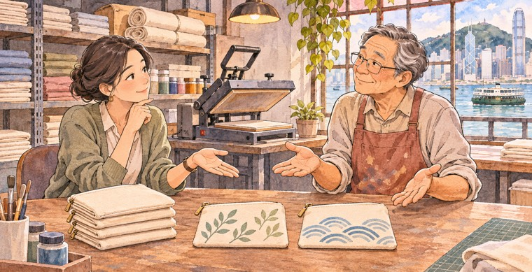

OPS-09 · 香港 · 10–15分鐘 · 營運管理 · 延遲差異化 · 款式組合的彈性
現在印花，還是留待稍後決定款式？

新聞裏 · 批量更小，彈性更大
2024年9月16日，香港生產力促進局（HKPC）公布香港製造業研究結果，當中談及小批量訂製和生產彈性。
這只是香港的背景資料，並非關於下文虛構布袋製造商的證據。
課堂決定
虛構的課堂情境。 一家香港獨立製造商正準備製作100個布袋，印上兩款原創圖案：葉紋和波浪紋。除了圖案，布袋的構造和品質完全相同。顧客只接受自己選定的款式，不會改選另一款。
製造商今天下午須從兩份涵蓋整批布袋的書面報價中選一份，目前尚未承諾任何支出。方案 A 現在就按標準的50/50比例完成印製；方案 B 則先保留通用的素色布袋，待星期五中午顧客選款截止後，才按選款結果印製，供顧客星期六領取。
兩個方案都負擔得起，在題設產能條件下亦可如期完成。團隊最初的規劃情境是葉紋和波浪紋各有50個和50個需求，並非已確認的訂單，也不是已有定論的預測。要決定的是何時敲定款式，而不是買多少個布袋。
| 全批100個布袋的報價方案 | 何時敲定款式 | 相關成本總額 |
|---|
| A · 提早按標準組合印製 | 現在印製50個葉紋、50個波浪紋 | HK$2,000 |
| B · 延後按需要印製 | 星期五選款截止後按所需比例印製 | HK$2,400 |
每個布袋售價40港元。未售出的成品扣除額外清貨成本後，每個淨清貨價值為5港元；假設清貨需求充足。不變的間接開支不計在內，因此算出的盈餘並非企業的整體利潤。
B 的固定報價包括物料、印花、預留的後段產能、包裝及所需的品質檢驗。無論採用哪種款式組合，預留時段都足以在星期六前完成印製和檢驗，交出100個合格布袋。圖案和物料均已備妥，並假設不會因機件故障或缺陷而延誤。領取前無法補貨或重印。
今天限期前可選的報價只有這兩份。若要提早按其他比例印製，或只提早印製部分數量，便需要另行報價及取得相應的產能承諾。
你的決定你會暫時選哪份報價，A 還是 B？關於款式需求比例或後段工序能否可靠完成，甚麼證據會令你改變選擇？
第二輪 · 改了一個事實
銷售統籌員帶來一場已結束、可作比較的期間限定銷售活動的選款統計： 80位顧客選葉紋，20位選波浪紋。當時供應的款式和售價相同，整段選款期間兩款均可選購。
單憑一場活動，且下次的顧客群可能不同，無法確定下一次的款式比例。作出承諾前，除了最初的50/50情境，也要考慮80/20情境；題目沒有提供概率。
按 B 的現有報價，100個通用素色布袋可在預留時段內印成80個葉紋和20個波浪紋，毋須增加存貨或另付費用。採用 A，多出的30個波浪紋布袋無法變成欠缺的葉紋布袋。現在並沒有第三份報價，也沒有出現未定價的混合方案。
你的決定保留選款彈性，值得多付400港元嗎？比較兩種款式需求情境，選一個方案，並指出哪些證據能支持你的選擇。
需求比例均衡，提早印製較划算
葉紋有50個需求、波浪紋也有50個需求時，兩個方案都能售出全部100個布袋，收入4,000港元，沒有剩貨。
A 的盈餘為4,000港元 − 2,000港元 = HK$2,000。B 的盈餘為4,000港元 − 2,400港元 = HK$1,600。在這個情境下，保留款式組合的彈性要多付400港元，卻不會增加銷售。
需求比例有變，通用素色布袋可保留選款彈性
葉紋有80個需求、波浪紋有20個需求時，A 售出50個葉紋和20個波浪紋布袋，合共70個。餘下30個波浪紋布袋的淨清貨價值為150港元。盈餘為70 × 40港元 + 30 × 5港元 − 2,000港元 = HK$950。
B 按顧客所需的80/20比例完成印製，售出全部100個布袋。盈餘仍為 HK$1,600，在這個情境下比 A 多650港元。
總需求和存貨總量仍各為100。優勢在於延後不可逆轉的款式決定，而非增加件數。清貨價值也影響結果：A 的盈餘由2,000港元降至950港元，減少的是1,050港元，而非1,200港元。
彈性有代價，並非穩勝
需求均衡時，A 的盈餘多400港元；需求不均衡時，B 的盈餘多650港元。沒有一個方案能在兩種情境下都勝出，單次活動的統計也不足以提供可用來判定預期回報高低的概率。
如果有可信證據顯示兩款需求均衡，選 A 有理據。如果款式比例存在顯著不確定性，而按顧客選款交貨又有其價值，選 B 也有理據。若需求比例倒轉為20/80，計算結果亦相同，因為兩款的成本和售價相同。
先確認後段工序可行，才可依賴
只有在圖案、物料、印花產能及檢驗安排都能及時就緒時，通用素色布袋才有用。題目已明確訂明這些條件，而 B 的報價亦已涵蓋；實際作出承諾前，應先核實。
延後印製不代表可以草率完成品質檢驗，也不代表可以假設有免費的生產時段。同樣，題設的兩份報價並不能證明其他款式比例或混合做法一律不可行。要比較新方案，須先確定其價格及所需產能是否有保障。
教師說明
先按最初的50/50規劃情境作暫定投票，再公布已結束活動的選款統計。第二輪披露的是值得納入另一種情境的歷史證據，不是已確認的未來訂單，也不是保證會應驗的預測。
讓模型聚焦於成品的款式組合：每個情境均有100件貨和100個需求，顧客不接受替代款式，不能重印，淨清貨價值亦已扣除額外清貨成本。比較的是銷售收入加淨清貨價值，再減去報價所列的相關成本，而非企業整體利潤或環境影響。
問學生多付400港元買到的是甚麼：是稍後才選定款式的彈性，而背後有已付費、可行的印製時段作保障。不要自行假設有免費的混合方案、補上題目未給的概率，或單憑剩貨件數推斷有環保效益。核心取捨是何時敲定款式，有別於決定存貨總量或安排批次先後。
第二輪
銷售統籌員帶來一場已結束、可作比較的期間限定銷售活動的選款統計： 80位顧客選葉紋，20位選波浪紋。當時供應的款式和售價相同，整段選款期間兩款均可選購。
單憑一場活動，且下次的顧客群可能不同，無法確定下一次的款式比例。作出承諾前，除了最初的50/50情境，也要考慮80/20情境；題目沒有提供概率。
按 B 的現有報價，100個通用素色布袋可在預留時段內印成80個葉紋和20個波浪紋，毋須增加存貨或另付費用。採用 A，多出的30個波浪紋布袋無法變成欠缺的葉紋布袋。現在並沒有第三份報價，也沒有出現未定價的混合方案。
你的決定保留選款彈性，值得多付400港元嗎？比較兩種款式需求情境，選一個方案，並指出哪些證據能支持你的選擇。